| Asignatura: | Desarrollo de Aplicaciones Móviles Nativas |
| Práctica: | Práctica 13 |
| Alumno: | Angel Frausto Robles |
| Grupo: | 7CM4 |
| Fecha: | 8 de noviembre de 2026 |
SharedPreferences guarda datos primitivos (cadenas, números, booleanos) como pares clave-valor en un archivo XML privado de la aplicación, que persiste aunque la app se cierre. Se obtiene con getSharedPreferences(nombre, modo) y se modifica con un SharedPreferences.Editor (putString, putFloat… y commit).
Objetivos:
Un proyecto, Preferencias, con un menú de cuatro botones (MainActivity.kt) y una actividad por cada ejemplo o ejercicio. Se ejecutó en el emulador de Android Studio (API 36). Cada pantalla lleva mi nombre como encabezado. Para comprobar los datos se leyó el archivo XML de cada preferencia directamente del dispositivo con adb shell run-as com.example.preferencias cat shared_prefs/…, equivalente al Device Explorer que menciona la guía.
onPause la guía convierte los campos con Float.parseFloat, que cierra la app si un campo queda vacío. Se agregó una validación: si el valor no es un número, se muestra un aviso y no se guarda.Al abrir la actividad se leen el título y los ejes X e Y del archivo preferencias.xml (con valores por omisión «ESCOM», 0 y 0). Al salir de la pantalla, onPause guarda los valores y muestra un Toast.
package com.example.preferencias;
import android.app.Activity;
import android.content.Context;
import android.content.SharedPreferences;
import android.os.Bundle;
import android.widget.EditText;
import android.widget.Toast;
/** Ejemplo 1: nombre, eje X y eje Y persistentes en el archivo preferencias.xml. */
public class Ejemplo1Activity extends Activity {
SharedPreferences sp;
EditText jetn, jetx, jety;
String s;
float x, y;
public void onCreate(Bundle b) {
super.onCreate(b);
setContentView(R.layout.activity_preferencias);
jetn = (EditText) findViewById(R.id.xetn);
jetx = (EditText) findViewById(R.id.xetx);
jety = (EditText) findViewById(R.id.xety);
sp = getSharedPreferences("preferencias", Context.MODE_PRIVATE);
s = sp.getString("titulo", "ESCOM");
x = sp.getFloat("x", 0);
y = sp.getFloat("y", 0);
jetn.setText(s);
jetx.setText("" + x);
jety.setText("" + y);
}
protected void onPause() {
super.onPause();
try {
s = jetn.getText().toString();
x = Float.parseFloat(jetx.getText().toString());
y = Float.parseFloat(jety.getText().toString());
} catch (NumberFormatException e) {
// Un eje vacío o inválido no debe cerrar la app: se conservan los valores anteriores.
Toast.makeText(this, "Eje X o Y inválido: no se guardó", Toast.LENGTH_LONG).show();
return;
}
SharedPreferences.Editor miEditor = sp.edit();
miEditor.putString("titulo", s);
miEditor.putFloat("x", x);
miEditor.putFloat("y", y);
miEditor.commit();
Toast.makeText(this, "Preferencias guardadas", Toast.LENGTH_LONG).show();
}
}
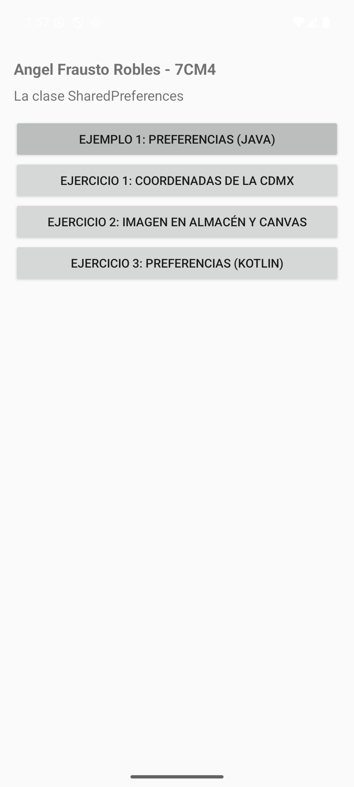
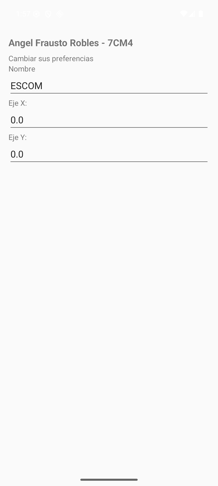
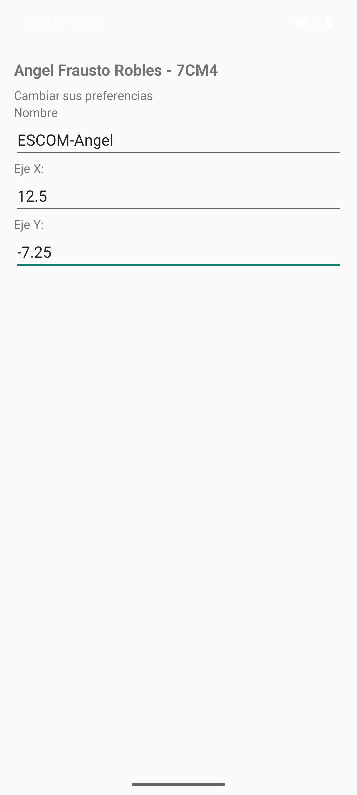
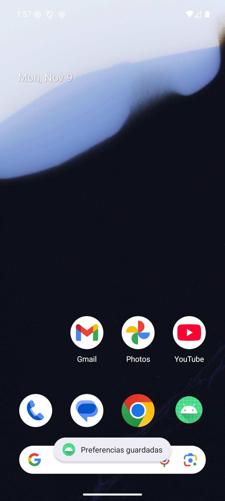
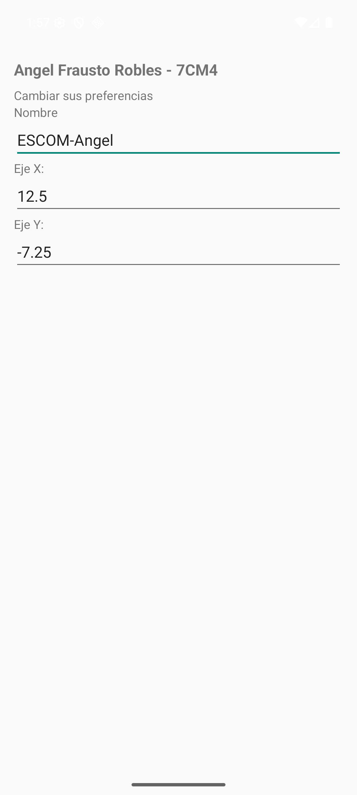
Contenido del archivo shared_prefs/preferencias.xml en el dispositivo:
<?xml version='1.0' encoding='utf-8' standalone='yes' ?>
<map>
<float name="x" value="12.5" />
<string name="titulo">ESCOM-Angel</string>
<float name="y" value="-7.25" />
</map>
CoordenadasActivity pide latitud y longitud, las guarda en el archivo coordenadas junto con el nombre de la ciudad y, con un Intent, abre MostrarCoordenadasActivity, que las lee y las muestra en un TextView. Se usaron las coordenadas 19.4326 (latitud) y -99.1332 (longitud).
package com.example.preferencias;
import android.app.Activity;
import android.content.Context;
import android.content.Intent;
import android.content.SharedPreferences;
import android.os.Bundle;
import android.widget.EditText;
import android.widget.Toast;
/** Ejercicio 1: pide latitud y longitud de la CDMX, las guarda y las muestra con un Intent. */
public class CoordenadasActivity extends Activity {
EditText etLatitud, etLongitud;
SharedPreferences sp;
@Override
protected void onCreate(Bundle b) {
super.onCreate(b);
setContentView(R.layout.activity_coordenadas);
etLatitud = findViewById(R.id.etLatitud);
etLongitud = findViewById(R.id.etLongitud);
sp = getSharedPreferences("coordenadas", Context.MODE_PRIVATE);
findViewById(R.id.bGuardar).setOnClickListener(v -> guardar());
findViewById(R.id.bMostrar).setOnClickListener(v ->
startActivity(new Intent(this, MostrarCoordenadasActivity.class)));
}
private void guardar() {
try {
float lat = Float.parseFloat(etLatitud.getText().toString());
float lon = Float.parseFloat(etLongitud.getText().toString());
SharedPreferences.Editor e = sp.edit();
e.putString("ciudad", "Ciudad de México");
e.putFloat("latitud", lat);
e.putFloat("longitud", lon);
e.commit();
Toast.makeText(this, "Coordenadas guardadas", Toast.LENGTH_SHORT).show();
} catch (NumberFormatException ex) {
Toast.makeText(this, "Escribe latitud y longitud como números", Toast.LENGTH_SHORT).show();
}
}
}
package com.example.preferencias;
import android.app.Activity;
import android.content.Context;
import android.content.SharedPreferences;
import android.os.Bundle;
import android.widget.TextView;
/** Lee las coordenadas guardadas en SharedPreferences y las muestra en un TextView. */
public class MostrarCoordenadasActivity extends Activity {
@Override
protected void onCreate(Bundle b) {
super.onCreate(b);
setContentView(R.layout.activity_mostrar_coordenadas);
SharedPreferences sp = getSharedPreferences("coordenadas", Context.MODE_PRIVATE);
TextView tv = findViewById(R.id.tvDatos);
if (!sp.contains("latitud")) {
tv.setText("No hay coordenadas guardadas.");
return;
}
tv.setText(sp.getString("ciudad", "")
+ "\nLatitud: " + sp.getFloat("latitud", 0)
+ "\nLongitud: " + sp.getFloat("longitud", 0));
}
}
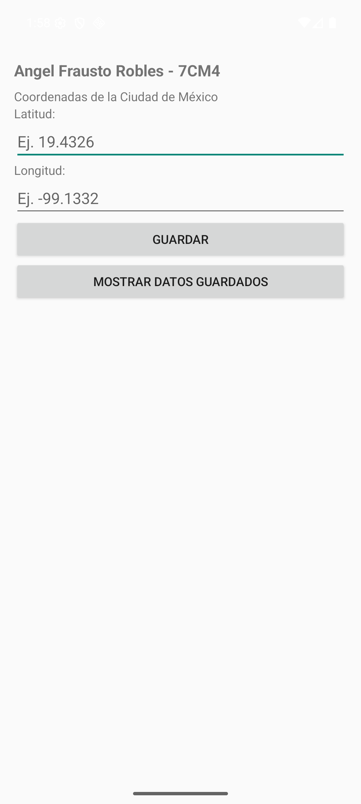
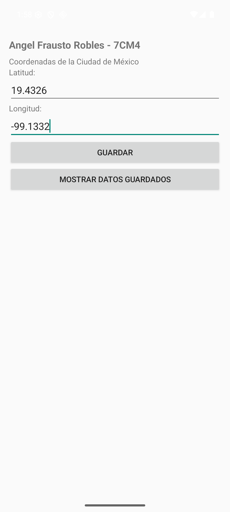
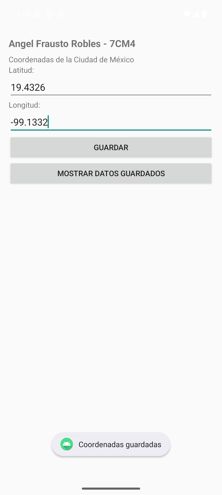
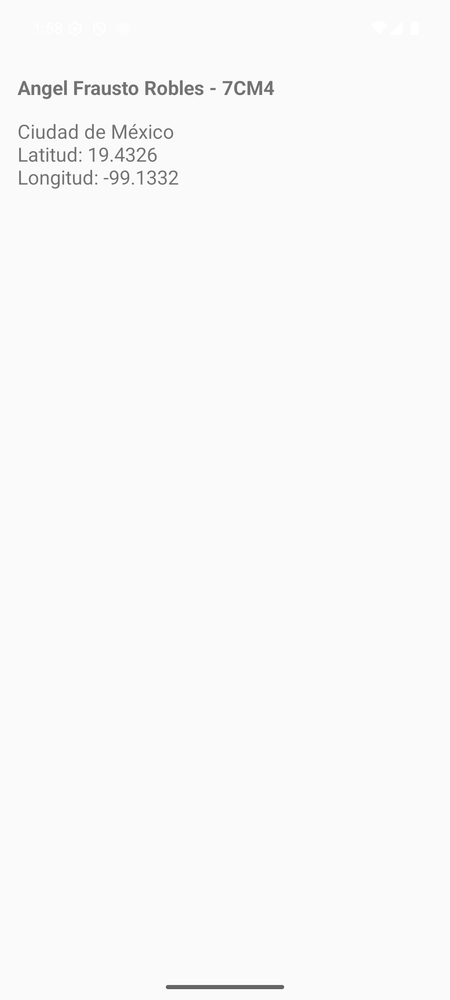
<?xml version='1.0' encoding='utf-8' standalone='yes' ?>
<map>
<float name="latitud" value="19.4326" />
<float name="longitud" value="-99.1332" />
<string name="ciudad">Ciudad de México</string>
</map>
ImagenActivity abre el selector de imágenes con ACTION_GET_CONTENT, y la imagen elegida se guarda como PNG en el almacén interno de la app con openFileOutput (archivo imagen_guardada.png). Con un Intent se abre MostrarImagenActivity, que lee el archivo y lo dibuja en un Canvas con drawBitmap dentro de una vista propia (onDraw), centrado y escalado.
package com.example.preferencias;
import android.app.Activity;
import android.content.Intent;
import android.graphics.Bitmap;
import android.graphics.BitmapFactory;
import android.graphics.ImageDecoder;
import android.net.Uri;
import android.os.Bundle;
import android.widget.ImageView;
import android.widget.TextView;
import android.widget.Toast;
import java.io.File;
import java.io.FileOutputStream;
/** Ejercicio 2: guarda en el almacén interno de la app una imagen elegida de la galería. */
public class ImagenActivity extends Activity {
static final String ARCHIVO = "imagen_guardada.png";
static final int PEDIR_IMAGEN = 1;
TextView tvEstado;
ImageView ivVista;
@Override
protected void onCreate(Bundle b) {
super.onCreate(b);
setContentView(R.layout.activity_imagen);
tvEstado = findViewById(R.id.tvEstado);
ivVista = findViewById(R.id.ivVista);
findViewById(R.id.bElegir).setOnClickListener(v -> {
Intent i = new Intent(Intent.ACTION_GET_CONTENT);
i.setType("image/*");
startActivityForResult(i, PEDIR_IMAGEN);
});
// El Canvas se muestra en otra Activity, a la que se llega con un Intent.
findViewById(R.id.bMostrar).setOnClickListener(v -> {
if (!getFileStreamPath(ARCHIVO).exists()) {
Toast.makeText(this, "Primero elige una imagen", Toast.LENGTH_SHORT).show();
return;
}
startActivity(new Intent(this, MostrarImagenActivity.class));
});
actualizarEstado();
}
@Override
protected void onActivityResult(int codigo, int resultado, Intent datos) {
super.onActivityResult(codigo, resultado, datos);
if (codigo != PEDIR_IMAGEN || resultado != RESULT_OK || datos == null) return;
Uri uri = datos.getData();
try {
Bitmap bmp = ImageDecoder.decodeBitmap(ImageDecoder.createSource(getContentResolver(), uri),
(decoder, info, src) -> {
int lado = Math.max(info.getSize().getWidth(), info.getSize().getHeight());
decoder.setTargetSampleSize(Math.max(1, lado / 1600));
});
try (FileOutputStream fos = openFileOutput(ARCHIVO, MODE_PRIVATE)) {
bmp.compress(Bitmap.CompressFormat.PNG, 100, fos);
}
Toast.makeText(this, "Imagen guardada", Toast.LENGTH_SHORT).show();
} catch (Exception e) {
Toast.makeText(this, "No se pudo guardar la imagen", Toast.LENGTH_SHORT).show();
}
actualizarEstado();
}
private void actualizarEstado() {
File f = getFileStreamPath(ARCHIVO);
if (f.exists()) {
tvEstado.setText("Imagen guardada en el almacén interno:\n" + f.getAbsolutePath());
ivVista.setImageBitmap(BitmapFactory.decodeFile(f.getAbsolutePath()));
}
}
}
package com.example.preferencias;
import android.app.Activity;
import android.content.Context;
import android.graphics.Bitmap;
import android.graphics.BitmapFactory;
import android.graphics.Canvas;
import android.graphics.Paint;
import android.graphics.RectF;
import android.graphics.Typeface;
import android.os.Bundle;
import android.view.View;
import android.widget.FrameLayout;
import android.widget.LinearLayout;
import android.widget.TextView;
/** Dibuja en un Canvas la imagen guardada en el almacén interno. */
public class MostrarImagenActivity extends Activity {
@Override
protected void onCreate(Bundle b) {
super.onCreate(b);
LinearLayout raiz = new LinearLayout(this);
raiz.setOrientation(LinearLayout.VERTICAL);
int margen = (int) (16 * getResources().getDisplayMetrics().density);
raiz.setPadding(margen, margen, margen, margen);
TextView nombre = new TextView(this);
nombre.setText(R.string.nombre_alumno);
nombre.setTextSize(18);
nombre.setTypeface(null, Typeface.BOLD);
raiz.addView(nombre);
Bitmap bmp = BitmapFactory.decodeFile(
getFileStreamPath(ImagenActivity.ARCHIVO).getAbsolutePath());
raiz.addView(new Lienzo(this, bmp), new LinearLayout.LayoutParams(
LinearLayout.LayoutParams.MATCH_PARENT, 0, 1f));
// El FrameLayout recibe las barras del sistema; el LinearLayout conserva su margen de 16 dp.
FrameLayout marco = new FrameLayout(this);
marco.setFitsSystemWindows(true);
marco.addView(raiz, new FrameLayout.LayoutParams(
FrameLayout.LayoutParams.MATCH_PARENT, FrameLayout.LayoutParams.MATCH_PARENT));
setContentView(marco);
}
/** Vista que dibuja el bitmap centrado y escalado al espacio disponible. */
static class Lienzo extends View {
final Bitmap bmp;
final Paint pincel = new Paint(Paint.FILTER_BITMAP_FLAG);
Lienzo(Context c, Bitmap bmp) {
super(c);
this.bmp = bmp;
}
@Override
protected void onDraw(Canvas canvas) {
if (bmp == null) return;
float escala = Math.min((float) getWidth() / bmp.getWidth(),
(float) getHeight() / bmp.getHeight());
float w = bmp.getWidth() * escala, h = bmp.getHeight() * escala;
float x = (getWidth() - w) / 2, y = (getHeight() - h) / 2;
canvas.drawBitmap(bmp, null, new RectF(x, y, x + w, y + h), pincel);
}
}
}
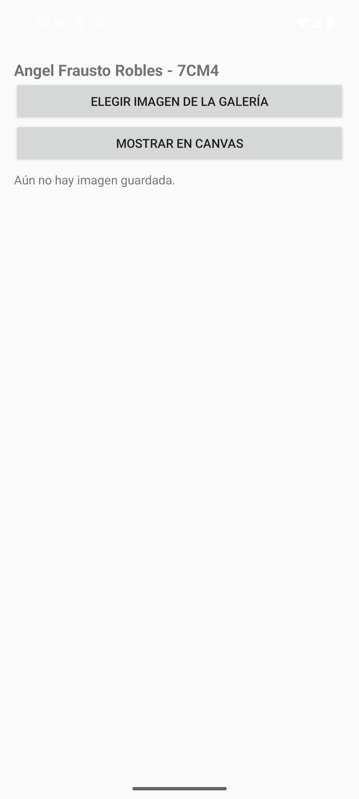
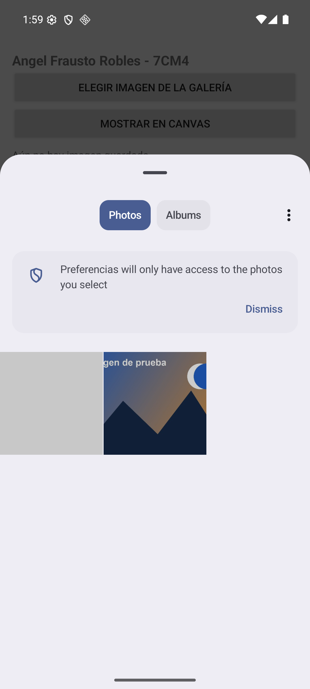
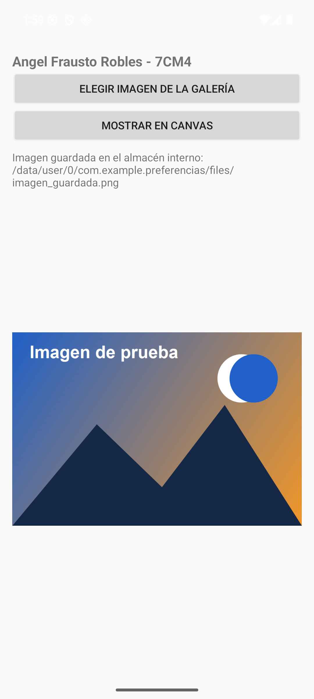
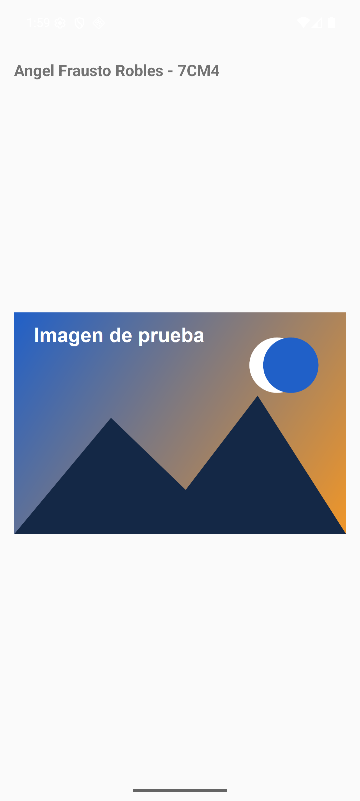
Archivo en el almacén interno (adb shell run-as … ls -l files):
total 88 -rw-rw---- 1 u0_a217 u0_a217 84031 2026-11-09 01:59 imagen_guardada.png
El Ejemplo 1 se reproduce en Kotlin con Ejercicio3Activity.kt, que usa lateinit para las vistas, el operador elvis (?:) para el valor por omisión y toFloatOrNull() para validar los números. Guarda en su propio archivo, preferencias_kotlin.xml, para no mezclar sus datos con los de la versión en Java.
package com.example.preferencias
import android.app.Activity
import android.content.Context
import android.content.SharedPreferences
import android.os.Bundle
import android.widget.EditText
import android.widget.Toast
/** Ejercicio 3: el Ejemplo 1 convertido a Kotlin (archivo preferencias_kotlin.xml). */
class Ejercicio3Activity : Activity() {
private lateinit var sp: SharedPreferences
private lateinit var jetn: EditText
private lateinit var jetx: EditText
private lateinit var jety: EditText
private var s: String = ""
private var x: Float = 0f
private var y: Float = 0f
override fun onCreate(savedInstanceState: Bundle?) {
super.onCreate(savedInstanceState)
setContentView(R.layout.activity_preferencias)
jetn = findViewById<EditText>(R.id.xetn)
jetx = findViewById<EditText>(R.id.xetx)
jety = findViewById<EditText>(R.id.xety)
sp = getSharedPreferences("preferencias_kotlin", Context.MODE_PRIVATE)
s = sp.getString("titulo", "ESCOM") ?: "ESCOM"
x = sp.getFloat("x", 0f)
y = sp.getFloat("y", 0f)
jetn.setText(s)
jetx.setText(x.toString())
jety.setText(y.toString())
}
override fun onPause() {
super.onPause()
val nuevoX = jetx.text.toString().toFloatOrNull()
val nuevoY = jety.text.toString().toFloatOrNull()
if (nuevoX == null || nuevoY == null) {
Toast.makeText(this, "Eje X o Y inválido: no se guardó", Toast.LENGTH_LONG).show()
return
}
s = jetn.text.toString()
x = nuevoX
y = nuevoY
val miEditor = sp.edit()
miEditor.putString("titulo", s)
miEditor.putFloat("x", x)
miEditor.putFloat("y", y)
miEditor.commit()
Toast.makeText(this, "Preferencias guardadas", Toast.LENGTH_LONG).show()
}
}
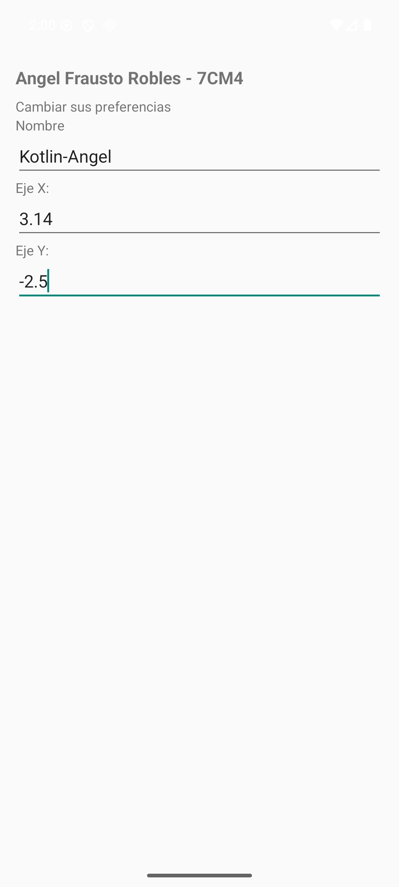
<?xml version='1.0' encoding='utf-8' standalone='yes' ?>
<map>
<float name="x" value="3.14" />
<string name="titulo">Kotlin-Angel</string>
<float name="y" value="-2.5" />
</map>
SharedPreferences es suficiente para guardar pocos datos simples, como configuraciones o las últimas coordenadas, y se usa con muy poco código: abrir el archivo, leer con valores por omisión y escribir con un editor. Para datos más grandes, como la imagen, no es adecuado, y por eso se guardó como archivo en el almacén interno, que también es privado de la aplicación. El archivo XML del dispositivo permitió comprobar que los datos realmente se escriben. En Kotlin el código queda más corto y seguro frente a valores nulos o vacíos, con el mismo comportamiento que en Java.